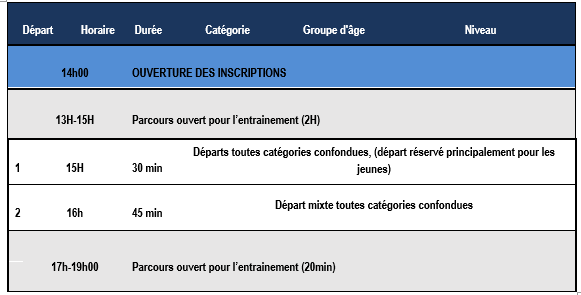
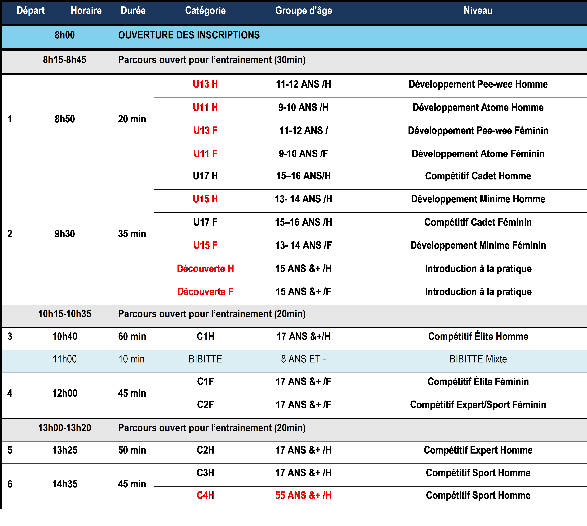
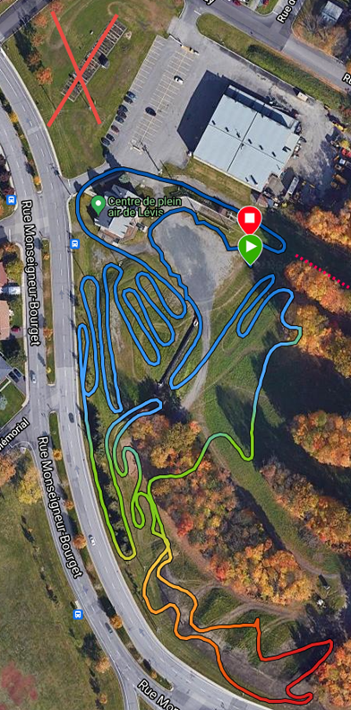
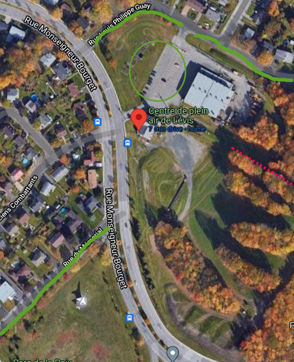

Inscriptions pour la FDS
Inscriptions pour les courses régionales du samedi
Inscriptions pour la coupe coupe du Québec du dimanche
Horaire du samedi 2 octobre

Horaire du dimanche 2 octobre

Le Parcours

Stationnement et emplacement
L'événement se déroule entièrement au Centre de pleine air de Lévis
Lien Google maps
65 Rue Monseigneur-Bourget, Lévis, QC G6V 8R7
